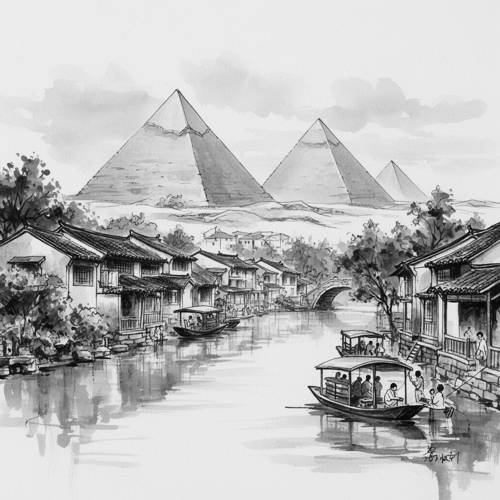
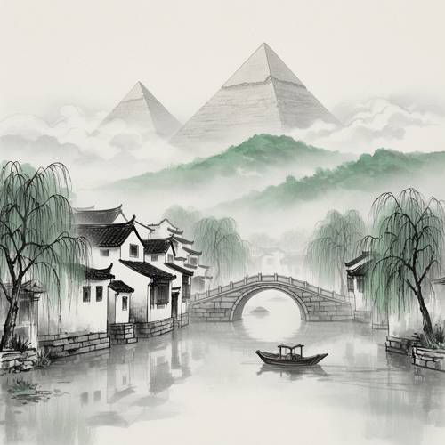
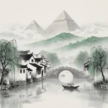

World Knowledge — Please draw a scene in the style of ink painting: Egyptian pyramids ar
Please draw a scene in the style of ink painting: Egyptian pyramids are located in the lush Jiangnan water town, but no desert elements can appear in the picture.

Direct — one call, no iteration

Continuum — Qwen3.8-27B + FLUX.2-dev
Judge — Direct
PASSWorld Knowledge — The image correctly depicts the key architectural elements. In the background, there are three large, triangular structures that are identifiable as Egyptian pyramids. In the foreground and middle ground, there is a scene featuring a canal, traditional Chinese-style houses with tiled roofs, an arched bridge, and awning-covered boats, which are all characteristic features of a Jiangnan water town.
PASSStyle — The artwork is rendered in a monochromatic palette of black, white, and gray tones. It employs techniques such as varied line weights and ink washes to create texture, depth, and shading, which is consistent with the style of an ink painting.
FAILGrammar - Negation — The prompt specifies that no desert elements should appear. However, the ground upon which the pyramids are built is depicted as bare, rolling hills, suggesting an arid or barren landscape. This bare earth/sand is a desert element, failing to adhere to the negative constraint.
PASSRelationship - Composition — The image places the Egyptian pyramids in the background, directly behind the buildings of the Jiangnan water town. This composition creates a single, unified scene where the pyramids are situated within the same visual landscape as the town.
Judge — Continuum
PASSWorld Knowledge — The image correctly depicts the key elements. In the background, there are two large triangular structures identifiable as Egyptian pyramids. The foreground and midground feature elements characteristic of a Jiangnan water town, including traditional houses with white walls and dark tiled roofs, a stone arch bridge over a river, weeping willow trees, and a small boat on the water.
PASSStyle — The image is rendered in a style consistent with ink painting. It utilizes a muted color palette of black, white, grey, and green. The artwork features visible brushstrokes, particularly on the trees and buildings, and employs ink wash techniques to create gradients and atmospheric effects in the water, mountains, and mist.
PASSGrammar - Negation — The image adheres to the negative constraint. There are no desert elements such as sand, dunes, or arid landscapes. Instead, the scene is lush, featuring a body of water, green weeping willows, and verdant hills, which is the opposite of a desert environment.
PASSRelationship - Composition — The image successfully composes the specified elements. The Egyptian pyramids are depicted in the background, rising above the clouds and green hills, while the Jiangnan water town, with its houses, bridge, and river, occupies the foreground and midground. This creates a unified scene where the pyramids appear to be located within the same landscape as the water town.
What the agent did
Thinking
Let me think about this prompt. The user is asking for a Chinese ink painting style scene: Egyptian pyramids inside a lush Jiangnan watertown, but no desert elements whatsoever. So what I need: ink wash painting (shuimo) style, Jiangnan watertown — white walls and black tiles (white-walled black-tiled houses), arched stone bridges, willow trees, small boats, mist, water reflections, perhaps a pavilion. And Egyptian pyramids rising in the background. No desert — so the pyramids should appear nestled among mist, water, and green hills, perhaps partially shrouded in mist. No sand, no cacti, no dunes, no dry ground. I'll generate with flux2-dev. Let me write a detailed prompt: "Traditional Chinese ink wash painting (shuimo) on rice paper, a lush Jiangnan watertown: white-walled black-tiled houses with curved eaves along a calm canal, arched stone bridges, weeping willows, small wooden boats, layers of mist, distant hills. In the misty background, great smooth-sided Egyptian pyramids rise among the green hills, partially veiled by mist and cloud. Soft gray and ink tones with subtle green wash, no desert, no sand dunes, no cacti, no dry barren ground — all ground is water, green vegetation and stone. Minimalist, elegant brushwork, blank space, faint ink splashes." Aspect ratio: I'll go with 1024x1024 by default, but maybe landscape would be better — like 1280x832? The tool defaults to 1024x1024. For a landscape ink painting, a wide format would be good. The benchmark says "image size is fixed for comparison" — hmm, "do not attempt to expand the frame. Image size is fixed for comparison" — this suggests the harness fixes the size. Actually it says the size is controlled by the harness... "Do not set the seed. Size and seed are controlled by the harness." Hmm, but generate_image has width/height parameters. The note says size is controlled by the harness — maybe I shouldn't override the default size. Safer to use the default 1024x1024? Landscape would be ideal for a scene like this. But the policy says size is controlled by the harness, so I should probably just leave it at the default. I'll leave it at the default. Let me generate, then inspect, then edit as needed, and mark the best.
Step 1 — `generate_image`
{
"model": "flux2-dev",
"prompt": "Traditional Chinese ink wash painting (shuimo) on rice paper, a lush Jiangnan water town: white-walled black-tiled houses with curved eaves lined along a calm canal, an arched stone bridge, weeping willows with fine ink strokes, a small wooden boat on misty water, layered soft mist, gentle green wash on distant hills. In the misty background, large smooth-sided Egyptian pyramids rise above the green hills, partially veiled by drifting cloud and mist, their facades rendered in light gray ink wash. Monochrome ink tones with subtle verdigris green accents, elegant dry-brush texture, generous blank paper space, no desert, no sand dunes, no cacti, no dry barren ground \u2014 all ground is water, green vegetation, stone and mist."
}
Result img_0

Thinking
This is a beautiful image. Let me check it: an ink-wash-painting-style Jiangnan watertown with white-walled houses with black tiles, arched bridges, willows, boats, misty green hills, and in the background two pyramids rising above the mist-covered hills. No desert elements visible—the pyramids are nestled among mist and green hills, which works very well. Let me zoom in on the pyramid region to check for any sand or desert elements and verify the details. I'll inspect the upper region.
Model
The first generation looks promising. Let me inspect the pyramid area and the details more closely before deciding.
On inspection: 1. Pyramid area: two pyramids rendered in soft gray ink wash, with misty clouds swirling around them, green hills in the foreground. No sand, no dunes, no cacti, no desert elements. The pyramid bases are hidden in mist and greenery. 2. Water town area: white-walled black-tiled houses, stone bridge, boats on misty water, reflections, stone embankment. All good. No desert elements. This scene fits the prompt very well: ink wash painting style, Egyptian pyramids, lush Jiangnan water town, no desert elements. The quality is high, and the composition is elegant. One small thing to note: the pyramid on the right has a band of rocky texture near its middle, but this just looks like stone layering and is fine. I think this is a good result that can be submitted as is. I'll mark img_0 as the best and be done.
Model
Both regions check out perfectly: - **Pyramids:** Rendered in soft gray ink-wash, rising through mist and green hilltops — no sand, dunes, cacti, or barren ground anywhere. - **Jiangnan watertown:** White-walled houses with black tiles, arched stone bridge, willows, misty canal with reflections, and a small boat — all in a refined ink-wash style. Every element the prompt asks for is present, and the "no desert" constraint is respected. This is a strong, elegant result — marking it as the best.
Step 4 — `mark_best`
{
"image": "img_0",
"reason": "Ink painting style achieved; Egyptian pyramids integrated into a lush Jiangnan water town with mist, willows, bridge and boat; no desert elements present."
}
Thinking
Mark the best as img_0 and done. Summarize for the user.
Model
Done! The scene is complete: - **Style:** Traditional Chinese ink painting (shuimo) — gray ink washes, subtle green tints, dry-brush willows, and generous misty blank space. - **Pyramids:** Two Egyptian pyramids rise in the background, rendered in light ink and veiled by drifting cloud and mist, so they sit naturally within the landscape. - **Jiangnan water town:** White-walled, black-tiled houses along a calm canal, an arched stone bridge, weeping willows, and a small wooden boat with reflections in the misty water. - **No desert elements:** The pyramid bases dissolve into mist and green hills; everything below is water, vegetation, and stone — no sand, dunes, or cacti. The result is marked as the best version.